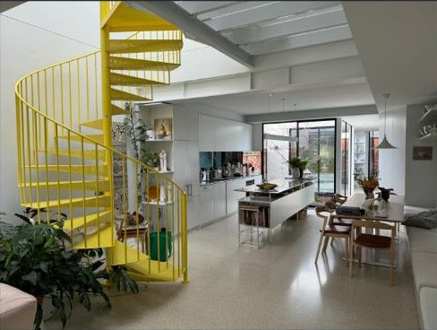

In 1974, a fitter and turner in inner-north Melbourne wanted a staircase down to the cellar of his house. He couldn't buy a spiral stair in Australia — so he designed one.
1975 — Gertrude Street, FitzroyThat staircase became enzie. Friends wanted one, then their friends did, and within a year there was a showroom on Gertrude Street with the factory squeezed in behind it. The design was modular steel: simple enough, and precise enough, that a renovator could assemble a whole staircase in a day. That is still how an enzie stair arrives.
1980s — RecognitionThe Australian Design Award followed, then the BHP Award for Consumer Products and a finalist's place in the Prince Philip Prize for Australian Design. The workshop outgrew Fitzroy for Fairfield, distributors were appointed through Singapore, Hong Kong and Japan, and the stairs have been drawn, cut and folded in Melbourne ever since — on CNC routers and laser scanners now, but still in steel.
Will it hold?The question he has always built towards. There is a photograph pinned to his Instagram under exactly that title: a helical stair shot from directly above, with a crowd standing shoulder to shoulder on every tread, all the way down to the floor. It held.
Now — Fitzroy NorthBryan still lives where it started. He and his wife Marija — both makers — rebuilt on their Fitzroy North block for the long haul and put a chrome-yellow enzie spiral at the centre of it. He chose that stair for its colour, and for the way light comes through a perforated tread. Which is, as it turns out, exactly what he is chasing now — only in a different material.
